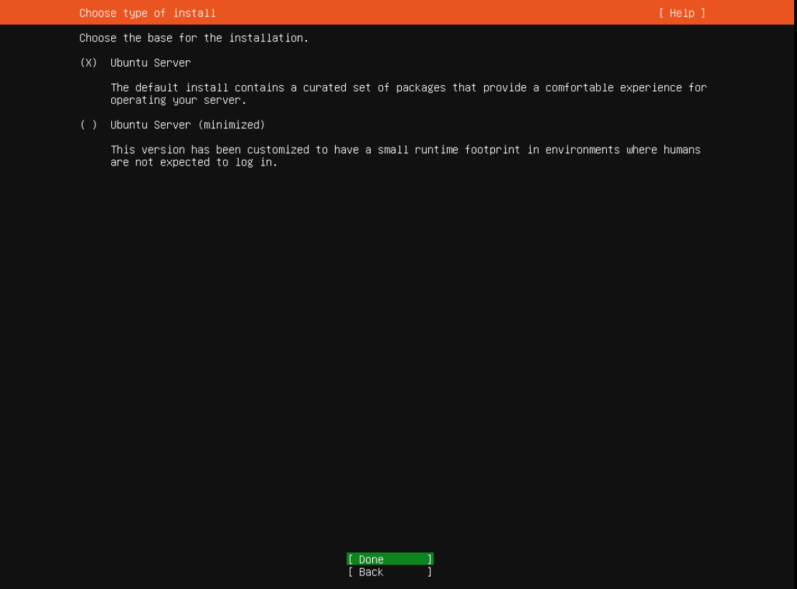
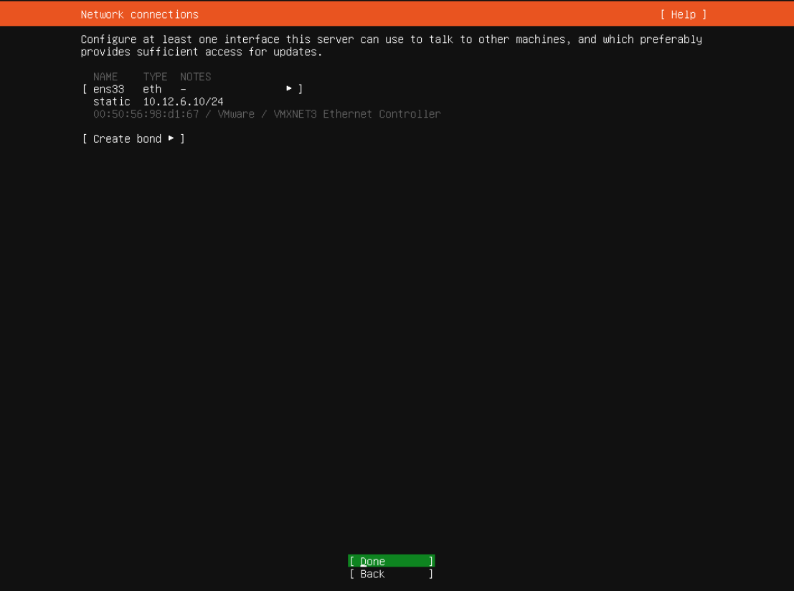
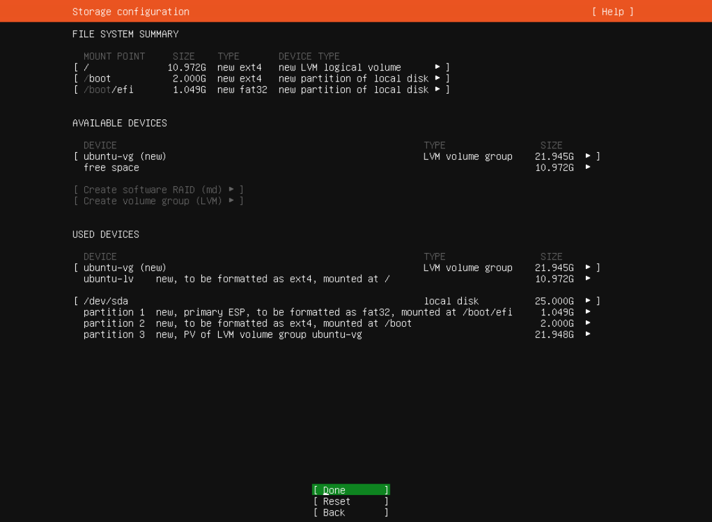
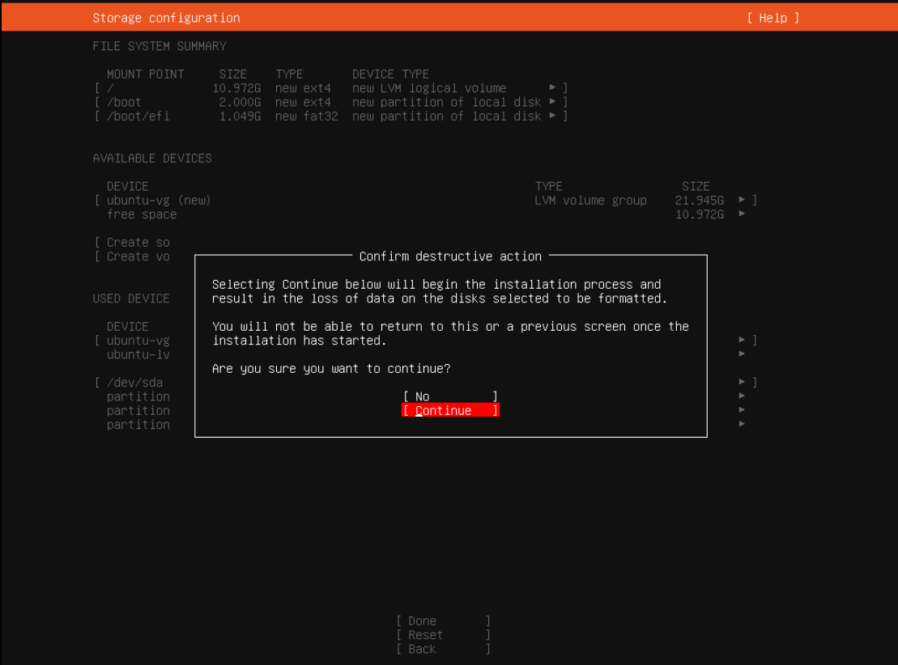

Her skal du lære å sette opp din egen Ubuntu VM(Virtual Machine) med apache2.
Apache2 lar deg hoste nettsider fra maskinen.
Skriv inn "10.10.1.20" i nettleseren din så kommer du til VM center. Trykk på "Launch Vsphere Client" og logg inn.


Her må du finne fram til din "pool". Du skal få utdelt det av læreren.
Så høyreklikker du å tryker på "New Virtual Machine".

Velg "Create a new virtual machine" og trykk "next".
Skriv et valgfritt navn til din VM og trykk "next".

Velg din egen "pool" og trykke "next".

Kryss av "IKT-fag" og trykk "next".
Velg "ESXI 8.0" og trykk "next".

Velg Linux "Family OS" og velg Ubuntu 64-bit.
Velg 8 GB "Memory".

Trykk deg inn i "New hard disk" og velg "Thin Provision".

Trykk deg inn i "New CD/DVD Drive" og velg "Content Library ISO File".
Skru på "Connect At Power On". Så trykker du på "Browse" på CD/DVD Media.

Her velger du "Ubuntu-22.04.1-live-server-amd64", så trykker du "ok" og "next".

Her er det bare en oppsumering, det er bare å trykke "Finish".

Trykk på "play" knappen for å starte maskinen.

Trykk på "Launch Web Console".
Velg språk, anbefaler engelsk.
Velg keyboard layout, anbefaler norsk.

Gå videre
Velg edit "IPv4"
Skriv inn IP, finn ut hva du skal skrive her ved å gå på nettsiden "10.12.99.69"
Name server skal være "10.10.1.30". Husk å slutte IP til VM-en med 69. Da blir IP-en 10.12.x.69

Gå videre.
Gå videre
Gå videre
Gå videre
Gå videre
Gå videre
Gå videre
Fyll ut med det du vil. Viktig å huske brukernavn og passord.

Gå videre
Gå videre
Nå må du vente noen minutter
Mens du venter på det kan du gå inn på "github.com". Hvis du ikke har bruker, lag en nå.
Lag en ny repository.

Gi den et unikt navn. Sett den som public. Legg til en "README" fil. Trykk "Create Repository"

Nå som du har laget en repository kan du laste opp filene til nettsiden din.


Når du har lastet opp alle filene dine kan du trykke på "Commit changes".

Nå kan du gå tilbake til VM-en og se om den er ferdig. Trykk på "Reboot Now" når den er ferdig.
Når den spørr etter login, skriver du inn brukernavn. Etter det spørr den om passord.
For å hente filene fra github trenger vi å laste ned git på maskinen. Skriv "sudo apt install git".
Nå skal vi laste ned apache2, derfor må vi først skrive "sudo apt update".
Nå kan du skrive "sudo apt install apache2".
Du skal nå kunne skrive ip adressen til VM-en din i en
nettleser hvor du vil få opp en default apache2 side.
Nå må du finne deg fram til apache2 sine default nettside filer.
Det finner du ved å skrive "cd /var/www". Så skriver du "ls" for å se alle filer i mappen.
Gå tilbake til github og kopier https clone linken.

Skriv "sudo git clone (link)"
skriv "ls" for å se filene.
Nå må vi endre hvor apache2 ser etter nettsiden. skriv "cd /etc/apache2/sites-enabled".
For å skrive i en fil må vi bruke "nano". Skriv "sudo nano 000-default.conf"
Endre documentroot fra "/var/www/html" til "/var/www/navnPåMappenDin". Trykk på ctrl+x for å gå ut, du vil få spørrsmål om du vil lagre.
Nå må vi restarte apache2 for at endrigene skal ta effekt. Skriv "sudo service apache2 reload"
Nå skal du ha en ferdig nettside. Skriv inn IP-en til nettsiden din i en nettleser å se hva som skjer